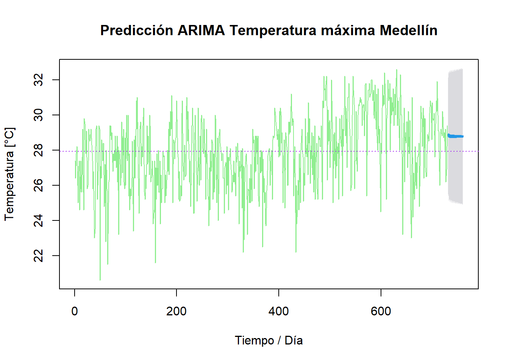

Capítulo 5 Modelos estacionarios en series de tiempo
En el presente capítulo se aplica la metodología Box-Jenkins para identificar modelos autoregresivos integrados de media móvil (ARIMA) para analizar y predecir valores futuros de las series de tiempo estudiada en el Grupo. Con las series estudiadas en las Predicciones iniciales se procede a trabajar en el presente capítulo.
5.1 Selección de series
Tal como se hizo en la unidad anterior, se trabajará en este capítulo con la temperatura máxima diaria a la cual es posible aplicar los métodos clásicos de series de tiempo. Tal como se vio en el análisis exploratorio inicial de las Series de tiempo, por continuidad de los registros se trabajará con los datos de Valledupar en los años 2018 y 2019 y con los de Medellín entre 2022 y 2023. A continuación se presenta la descripción inicial de los datos, la clase de los objetos creados, el inicio y fin, su frecuencia, así como la cantidad de NA y un resumen estadístico para cada serie.
# Serie xts Temperatura máxima diaria Valledupar 2018-2019
VUP_temp_2018_2019 <- df_temp_max_ts["2018/2019", "VUP"]
str(VUP_temp_2018_2019)## An xts object on 2018-01-01 / 2019-12-31 containing:
## Data: double [730, 1]
## Columns: VUP
## Index: Date [730] (TZ: "UTC")## [1] "xts" "zoo"## [1] "2018-01-01"## [1] "2019-12-31"## [1] 1## VUP
## 0# Serie ts Temperatura máxima diaria Valledupar 2018-2019
VUP_temp_2018_2019_ts <- as.ts(VUP_temp_2018_2019)
class(VUP_temp_2018_2019_ts)## [1] "ts"## Time-Series [1:730] from 1 to 730: 34.2 32.3 33.5 33.4 32.8 34.2 33.9 34.8 34.4 33.3 ...## Min. 1st Qu. Median Mean 3rd Qu. Max.
## 27.80 34.23 35.60 35.48 36.80 40.60# Serie xts Temperatura máxima diaria Medellín 2022-2023
MED_temp_2022_2023 <- df_temp_max_ts["2022/2023", "MED"]
str(MED_temp_2022_2023)## An xts object on 2022-01-01 / 2023-12-31 containing:
## Data: double [730, 1]
## Columns: MED
## Index: Date [730] (TZ: "UTC")## [1] "xts" "zoo"## [1] "2022-01-01"## [1] "2023-12-31"## [1] 1## MED
## 0# Serie ts Temperatura máxima diaria Medellín 2022-2023
MED_temp_2022_2023_ts <- as.ts(MED_temp_2022_2023)
class(MED_temp_2022_2023_ts)## [1] "ts"## Time-Series [1:730] from 1 to 730: 27.4 26.4 27.8 28 28.2 26 25 26.8 27.4 24.6 ...## Min. 1st Qu. Median Mean 3rd Qu. Max.
## 20.60 26.50 28.00 27.93 29.40 32.60Luego de obtener la descripción de las series, se procede como se ha hecho anteriormente a graficarlas:
# Plot ts Temperatura Valledupar
plot(VUP_temp_2018_2019_ts,
main="Temperatura máxima diaria Valledupar 2018-2019",
xlab="Tiempo / Día", ylab="Temperatura [°C]",
col="orange")
abline(h = mean(VUP_temp_2018_2019), col = "red", lty="dashed")Es importante notar que el comportamiento de la temperatura máxima diaria en Valledupar varía entre cerca de los 28 ºC a los 40 ºC. En la figura anterior se aprecia que el promedio de la serie se encuentra cercana a los 35.5 grados Celsius.
# Plot xts Temperatura Medellín
plot(MED_temp_2022_2023_ts,
main="Temperatura máxima diaria Medellín 2022-2023",
xlab="Tiempo / Día", ylab="Temperatura [°C]",
col="lightgreen")
abline(h = mean(MED_temp_2022_2023), col = "purple", lty="dashed")Como ya se había descrito para Medellín en capítulo 4 en el numeral de Tendencias y ciclos, la temperatura máxima diaria en la ciudad en los años 2022 y 2023 varía entre los 20 ºC y los 33 ºC, mientras que su promedio se encuentra cerca de los 28 ºC.
5.2 Puntos de cambio
Ahora, encontramos los puntos de cambio de las series con la función cpt.mean:
# Change points Valledupar
VUP_temp_cpt <- cpt.mean(VUP_temp_2018_2019_ts, method = "AMOC")
cpts(VUP_temp_cpt)## [1] 623Se puede apreciar que el punto de cambio en la serie de temperatura máxima diaria en Valledupar entre los años 2018 y 2019 se presenta el día 623, es decir, el 16 de septiembre de 2019.
# Change points Medellín
MED_temp_cpt <- cpt.mean(MED_temp_2022_2023_ts, method = "AMOC")
cpts(MED_temp_cpt)## [1] 485Mientras, que para Medellín en la serie de los años 2022 y 2023, el punto de cambio en la temperatura máxima diaria se encuentra según la función cpt.mean el día 485, que corresponde a 1 de mayo de 2023.
Finalmente obtenemos con plot las gráficas para cada punto de cambio calculado anteriormente:
# Plot change point Valledupar
plot(VUP_temp_cpt, type = "l", cpt.col = "orange", cpt.width = 3,
main="Punto cambio Temperatura máxima Valledupar",
xlab="Tiempo / Día", ylab="Temperatura [°C]")Tal como se calculó en Valledupar es claro el cambio / disminución en la línea naranja cerca del día 623.
# Plot change point Medellín
plot(MED_temp_cpt, type = "l", cpt.col = "lightgreen", cpt.width = 3,
main="Punto cambio Temperatura máxima Medellín",
xlab="Tiempo / Día", ylab="Temperatura [°C]")Nuevamente, tal como se calculó con cpt.mean para Medellín se aprecia en la figura anterior el cambio / aumento en la línea verde claro cerca del día 485.
5.3 Verificación de estacionariedad
Por último, procedemos a verificar si las series son estacionarias con la función adf.test:
##
## Augmented Dickey-Fuller Test
##
## data: VUP_temp_2018_2019_ts
## Dickey-Fuller = -4.3478, Lag order = 8, p-value = 0.01
## alternative hypothesis: stationary##
## Augmented Dickey-Fuller Test
##
## data: MED_temp_2022_2023_ts
## Dickey-Fuller = -6.0864, Lag order = 8, p-value = 0.01
## alternative hypothesis: stationaryComo en ambos casos, el p-value es menor que 0.05 (en cada caso 0.01) las series de temperatura máxima diaria analizadas son estacionarias.
5.4 Funciones de ACF y PACT
Tal como se realizó en el Capítulo 3 para la lluvia en la sección Funciones de autocorrelación (ACF y PACF), ahora se aplican las funciones de autocorrelación acf y pacf y se obtienen las gráficas respectivas para las series de temperatura seleccionadas de Valledupar y Medellín:
# ACF y PACF Valledupar
acf(VUP_temp_2018_2019_ts, col = "orange",
main="ACF Temperatura máxima Valledupar")# ACF y PACF Medellín
acf(MED_temp_2022_2023_ts, col = "lightgreen",
main="ACF Temperatura máxima Medellín")
5.5 Modelos ARIMA
Ahora, se procede a aplicar la función auto.arima, para encontrar el modelo de ajuste para las series de temperaturas máximas de Valledupar y Medellín:
## Series: VUP_temp_2018_2019_ts
## ARIMA(3,0,1) with non-zero mean
##
## Coefficients:
## ar1 ar2 ar3 ma1 mean
## 1.2715 -0.2007 -0.0910 -0.8465 35.4347
## s.e. 0.0563 0.0609 0.0429 0.0413 0.4139
##
## sigma^2 = 2.329: log likelihood = -1342.36
## AIC=2696.72 AICc=2696.84 BIC=2724.28El ajuste para el modelo de la temperatura máxima diaria de Valledupar se encuentra en ARIMA(3,0,1), mientras que como se observa a continuación el de Medellín se calcula en ARIMA(2,1,3).
## Series: MED_temp_2022_2023_ts
## ARIMA(2,1,3)
##
## Coefficients:
## ar1 ar2 ma1 ma2 ma3
## -0.4122 0.5378 -0.2224 -0.9113 0.1923
## s.e. 0.1184 0.1156 0.1347 0.0426 0.1196
##
## sigma^2 = 2.838: log likelihood = -1412.96
## AIC=2837.91 AICc=2838.03 BIC=2865.465.5.1 Predicciones ARIMA
Con los modelos ARIMA listos, con la función forecasty usando los modelos anteriores se procede a predecir 30 días para cada una de las series de Valledupar y Medellín:
# Forecast ARIMA Valledupar
VUP_temp_arima <- forecast(VUP_temp_model, h = 30,level=95)
VUP_temp_arima## Point Forecast Lo 95 Hi 95
## 731 35.38321 32.39203 38.37439
## 732 35.40162 32.15150 38.65173
## 733 35.46981 32.06462 38.87499
## 734 35.49066 32.00074 38.98058
## 735 35.50181 31.95145 39.05217
## 736 35.50560 31.90761 39.10360
## 737 35.50629 31.86778 39.14479
## 738 35.50538 31.83104 39.17973
## 739 35.50375 31.79699 39.21051
## 740 35.50179 31.76536 39.23822
## 741 35.49971 31.73595 39.26347
## 742 35.49761 31.70859 39.28663
## 743 35.49554 31.68312 39.30795
## 744 35.49351 31.65939 39.32763
## 745 35.49154 31.63727 39.34580
## 746 35.48962 31.61665 39.36260
## 747 35.48778 31.59741 39.37814
## 748 35.48599 31.57946 39.39251
## 749 35.48426 31.56270 39.40582
## 750 35.48259 31.54705 39.41813
## 751 35.48097 31.53242 39.42953
## 752 35.47941 31.51875 39.44008
## 753 35.47790 31.50596 39.44984
## 754 35.47645 31.49401 39.45889
## 755 35.47504 31.48282 39.46726
## 756 35.47368 31.47235 39.47500
## 757 35.47236 31.46255 39.48218
## 758 35.47109 31.45338 39.48881
## 759 35.46987 31.44478 39.49496
## 760 35.46868 31.43672 39.50064Se encuentra que para Valledupar se obtienen predicciones con auto.arima muy cercanas, entre 35.38 y 35.51 ºC, con sola una variación de 0.12 grados Celsius, por lo realmente son prácticamente constantes (en 35.4 o 35.5 ºC). El promedio de los forecasts auto.arima es de 35.48 ºC (la media de toda la serie de tiempo).
# Forecast ARIMA Medellín
MED_temp_arima <- forecast(MED_temp_model, h = 30,level=95)
MED_temp_arima## Point Forecast Lo 95 Hi 95
## 731 28.80578 25.50406 32.10750
## 732 28.92633 25.41118 32.44147
## 733 28.73615 25.12274 32.34956
## 734 28.87938 25.23192 32.52684
## 735 28.71806 25.04432 32.39181
## 736 28.86159 25.17718 32.54600
## 737 28.71567 25.01790 32.41343
## 738 28.85301 25.14901 32.55701
## 739 28.71792 25.00380 32.43203
## 740 28.84747 25.12818 32.56676
## 741 28.72141 24.99304 32.44978
## 742 28.84305 25.10974 32.57635
## 743 28.72511 24.98316 32.46706
## 744 28.83914 25.09227 32.58601
## 745 28.72871 24.97343 32.48400
## 746 28.83556 25.07531 32.59581
## 747 28.73212 24.96364 32.50061
## 748 28.83222 25.05870 32.60575
## 749 28.73533 24.95373 32.51694
## 750 28.82911 25.04240 32.61582
## 751 28.73835 24.94369 32.53300
## 752 28.82619 25.02637 32.62601
## 753 28.74117 24.93352 32.54881
## 754 28.82346 25.01059 32.63633
## 755 28.74381 24.92323 32.56439
## 756 28.82090 24.99505 32.64675
## 757 28.74629 24.91284 32.57974
## 758 28.81850 24.97973 32.65728
## 759 28.74861 24.90234 32.59488
## 760 28.81626 24.96462 32.66790Al igual que la predicción anterior, para Medellín se obtienen valores casi constantes con auto.arima y forecast muy cercanos entre ellos (28.7 ºC - 28.9 ºC), con sola una variación de 0.21 ºC. El promedio de dichas predicciones es 28.79 ºC.
A continuación, se grafican con plot las predicciones auto.arima obtenidas para Valledupar y Medellín:
# Plot forecast Valledupar
plot(VUP_temp_arima, col = "orange",
main="Predicción ARIMA Temperatura máxima Valledupar",
xlab="Tiempo / Día", ylab="Temperatura [°C]")
abline(h = mean(VUP_temp_2018_2019), col = "red", lty = "dotted")
En la figura anterior, se aprecia poca variabilidad en la línea azul de la predicción para Valledupar y se nota claramente que los valores son en esencia la media de la serie de tiempo.
# Plot forecast Medellín
plot(MED_temp_arima, col = "lightgreen",
main="Predicción ARIMA Temperatura máxima Medellín",
xlab="Tiempo / Día", ylab="Temperatura [°C]")
abline(h = mean(MED_temp_2022_2023), col = "purple", lty = "dotted")
En Medellín, se aprecia para predicción prácticamente una línea recta, aunque esta vez más cercana a la media después del punto de cambio que a la media de toda la serie.
5.5.1.1 Cálculos residuales
Ahora para las predicciones ARIMA, se estiman los residuales y se grafican con qqnorm.
# Residuales Valledupar
VUP_temp_res = VUP_temp_arima$residuals
qqnorm(VUP_temp_res)
qqline(VUP_temp_res)# Residuales Medellín
MED_temp_res = MED_temp_arima$residuals
qqnorm(MED_temp_res)
qqline(MED_temp_res)A continuación, se procede a comprobar la normalidad de los modelos ARIMA inicialmente aplicando las pruebas de Shapiro-Wilk con la función shapiro.test.
##
## Shapiro-Wilk normality test
##
## data: VUP_temp_res
## W = 0.96438, p-value = 2.49e-12##
## Shapiro-Wilk normality test
##
## data: MED_temp_res
## W = 0.97552, p-value = 1.051e-09Ambos p-values son muy pequeños cercanos a 2.5E-12 y 1E-9 (por lo tanto mucho menor que 0.05), lo que indica que los modelos ARIMA para ambas ciudades no siguen una distribución normal.
Finalmente, se aplican las pruebas Box-Pierce / Ljung-Box con la función Box.test para evaluar la independencia de los residuos.
##
## Box-Pierce test
##
## data: VUP_temp_res
## X-squared = 0.0055686, df = 1, p-value = 0.9405##
## Box-Pierce test
##
## data: MED_temp_res
## X-squared = 0.0079384, df = 1, p-value = 0.929Los resultados de Box-Pierce, presentan p-values mayores a 0.9 (evidentemente por encima de 0.05), por lo tanto, no hay evidencia de autocorrelación significativa en los residuos de los modelos ARIMA y son independientes tanto para Valledupar, como para Medellín.
5.5.2 Predicciones forecast
Ahora para comparar, se procede a predecir con la función forecast con un horizonte 30 días usando directamente cada una de las series de temperatura estudiadas:
## Point Forecast Lo 80 Hi 80 Lo 95 Hi 95
## 731 35.44583 33.43742 37.45424 32.37423 38.51742
## 732 35.44583 33.29529 37.59637 32.15687 38.73479
## 733 35.44583 33.16199 37.72967 31.95300 38.93866
## 734 35.44583 33.03605 37.85561 31.76039 39.13127
## 735 35.44583 32.91637 37.97528 31.57736 39.31430
## 736 35.44583 32.80211 38.08955 31.40261 39.48905
## 737 35.44583 32.69258 38.19907 31.23510 39.65655
## 738 35.44583 32.58725 38.30441 31.07401 39.81765
## 739 35.44583 32.48566 38.40599 30.91865 39.97301
## 740 35.44583 32.38745 38.50421 30.76844 40.12322
## 741 35.44583 32.29229 38.59937 30.62291 40.26875
## 742 35.44583 32.19992 38.69173 30.48165 40.41001
## 743 35.44583 32.11011 38.78155 30.34429 40.54737
## 744 35.44583 32.02266 38.86900 30.21054 40.68112
## 745 35.44583 31.93738 38.95428 30.08012 40.81154
## 746 35.44583 31.85413 39.03753 29.95279 40.93887
## 747 35.44583 31.77276 39.11890 29.82835 41.06330
## 748 35.44583 31.69316 39.19850 29.70661 41.18505
## 749 35.44583 31.61521 39.27645 29.58740 41.30426
## 750 35.44583 31.53881 39.35284 29.47056 41.42109
## 751 35.44583 31.46388 39.42777 29.35597 41.53569
## 752 35.44583 31.39034 39.50132 29.24349 41.64816
## 753 35.44583 31.31811 39.57355 29.13302 41.75864
## 754 35.44583 31.24711 39.64454 29.02445 41.86721
## 755 35.44583 31.17730 39.71435 28.91768 41.97398
## 756 35.44583 31.10862 39.78304 28.81263 42.07902
## 757 35.44583 31.04100 39.85066 28.70922 42.18244
## 758 35.44583 30.97440 39.91725 28.60737 42.28428
## 759 35.44583 30.90879 39.98287 28.50702 42.38464
## 760 35.44583 30.84411 40.04755 28.40810 42.48356Aunque se obtienen predicciones / forecasting sin problemas, se puede apreciar fácilmente que el modelo pronostica para la temperatura máxima diaria en Valledupar un valor constante de 35.4 ºC para todo el mes / 30 días siguientes.
## Point Forecast Lo 80 Hi 80 Lo 95 Hi 95
## 731 28.32534 26.09965 30.55104 24.92143 31.72926
## 732 28.32534 26.03224 30.61845 24.81834 31.83235
## 733 28.32534 25.96675 30.68394 24.71819 31.93250
## 734 28.32534 25.90304 30.74765 24.62075 32.02994
## 735 28.32534 25.84096 30.80973 24.52580 32.12489
## 736 28.32534 25.78039 30.87030 24.43317 32.21752
## 737 28.32534 25.72123 30.92946 24.34270 32.30799
## 738 28.32534 25.66339 30.98730 24.25423 32.39646
## 739 28.32534 25.60677 31.04392 24.16765 32.48304
## 740 28.32534 25.55132 31.09937 24.08283 32.56786
## 741 28.32534 25.49694 31.15375 23.99968 32.65101
## 742 28.32534 25.44360 31.20709 23.91809 32.73259
## 743 28.32534 25.39122 31.25947 23.83799 32.81270
## 744 28.32534 25.33977 31.31092 23.75930 32.89139
## 745 28.32534 25.28918 31.36151 23.68193 32.96876
## 746 28.32534 25.23942 31.41127 23.60584 33.04485
## 747 28.32534 25.19046 31.46023 23.53095 33.11974
## 748 28.32534 25.14224 31.50845 23.45721 33.19348
## 749 28.32534 25.09475 31.55594 23.38458 33.26611
## 750 28.32534 25.04794 31.60275 23.31299 33.33770
## 751 28.32534 25.00180 31.64889 23.24242 33.40827
## 752 28.32534 24.95628 31.69441 23.17281 33.47788
## 753 28.32534 24.91138 31.73931 23.10413 33.54656
## 754 28.32534 24.86705 31.78364 23.03634 33.61435
## 755 28.32534 24.82329 31.82740 22.96941 33.68128
## 756 28.32534 24.78006 31.87063 22.90330 33.74739
## 757 28.32534 24.73736 31.91333 22.83800 33.81269
## 758 28.32534 24.69516 31.95553 22.77346 33.87723
## 759 28.32534 24.65344 31.99725 22.70966 33.94103
## 760 28.32534 24.61220 32.03849 22.64657 34.00411Al igual que con Valledupar, los pronósticos de Medellín son constantes en 28.3 ºC para todo el horizonte de 30 días solicitado al modelo.
Para finalizar, a continuación se grafican con plot las predicciones encontradas para Valledupar y Medellín:
# Plot forecast Valledupar
plot(VUP_temp_pred, col = "orange",
main="Forecast Temperatura máxima Valledupar",
xlab="Tiempo / Día", ylab="Temperatura [°C]")
abline(h = mean(VUP_temp_2018_2019), col = "red", lty = "dotted")Como era de esperar, se obtiene una línea horizontal de la predicción que no varía par Valledupar alrededor de los 35 grados Celsius.
# Plot forecast Medellín
plot(MED_temp_pred, col = "lightgreen",
main="Forecast Temperatura máxima Medellín",
xlab="Tiempo / Día", ylab="Temperatura [°C]")
abline(h = mean(MED_temp_2022_2023), col = "purple", lty = "dotted")La gráfica anterior presenta el pronóstico para Medellín que como se ha calculado, se encuentra cerca de los 28 ºC.
5.5.3 Verificación valores atípicos
Para terminar, con la función tso de la librería tsoutliers, se validan los ARIMA y grafican los efectos de los valores atípicos / outliers en las series:
## Series: VUP_temp_2018_2019_ts
## Regression with ARIMA(1,0,1) errors
##
## Coefficients:
## ar1 ma1 intercept TC226 AO555 TC593
## 0.9255 -0.5371 35.5162 -6.8913 -7.6706 -5.7097
## s.e. 0.0193 0.0469 0.3310 1.3540 1.3296 1.3545
##
## sigma^2 = 2.152: log likelihood = -1312.92
## AIC=2639.84 AICc=2639.99 BIC=2671.99
##
## Outliers:
## type ind time coefhat tstat
## 1 TC 226 226 -6.891 -5.090
## 2 AO 555 555 -7.671 -5.769
## 3 TC 593 593 -5.710 -4.215plot(VUP_temp_outliers,
args.lines.y = list(col = "orange"),
args.lines.yadj = list(col = "orangered"))En el caso de Valledupar, la función tso encuentra tres outliers, mientras como se aprecia a continuación para Medellín solamente uno. Ahora, tso encuentra el ajuste de la serie de Valledupar sin atípicos en ARIMA(1,0,1) y para Medellín en ARIMA(1,1,1).
## Series: MED_temp_2022_2023_ts
## Regression with ARIMA(1,1,1) errors
##
## Coefficients:
## ar1 ma1 AO50
## 0.3442 -0.9407 -7.1941
## s.e. 0.0452 0.0225 1.5369
##
## sigma^2 = 2.78: log likelihood = -1406.29
## AIC=2820.58 AICc=2820.63 BIC=2838.94
##
## Outliers:
## type ind time coefhat tstat
## 1 AO 50 50 -7.194 -4.681plot(MED_temp_outliers,
args.lines.y = list(col = "lightgreen"),
args.lines.yadj = list(col = "darkgreen"))Ahora se realizan las predicciones con forecast, usando auto.arima con las series ajustadas sin outliers con tso:
# Forecast ts Valledupar
VUP_temp_order <- auto.arima(VUP_temp_outliers$yadj)
VUP_temp_tso <- forecast(VUP_temp_order, h = 30)
VUP_temp_tso## Point Forecast Lo 80 Hi 80 Lo 95 Hi 95
## 731 35.47045 33.60325 37.33766 32.61481 38.32609
## 732 35.40387 33.39455 37.41320 32.33087 38.47688
## 733 35.48766 33.36300 37.61232 32.23828 38.73704
## 734 35.49972 33.31234 37.68711 32.15440 38.84505
## 735 35.51322 33.27777 37.74867 32.09440 38.93204
## 736 35.51765 33.24397 37.79133 32.04036 38.99494
## 737 35.51996 33.21346 37.82647 31.99247 39.04746
## 738 35.52056 33.18504 37.85608 31.94868 39.09243
## 739 35.52045 33.15875 37.88216 31.90853 39.13238
## 740 35.51996 33.13438 37.90555 31.87153 39.16840
## 741 35.51930 33.11181 37.92679 31.83736 39.20124
## 742 35.51856 33.09089 37.94623 31.80576 39.23136
## 743 35.51779 33.07151 37.96408 31.77652 39.25907
## 744 35.51703 33.05353 37.98052 31.74943 39.28462
## 745 35.51627 33.03685 37.99569 31.72433 39.30822
## 746 35.51554 33.02138 38.00970 31.70105 39.33003
## 747 35.51483 33.00701 38.02265 31.67945 39.35021
## 748 35.51414 32.99366 38.03462 31.65939 39.36889
## 749 35.51347 32.98125 38.04570 31.64077 39.38618
## 750 35.51283 32.96971 38.05595 31.62346 39.40220
## 751 35.51221 32.95898 38.06544 31.60738 39.41704
## 752 35.51161 32.94899 38.07422 31.59243 39.43079
## 753 35.51103 32.93970 38.08236 31.57852 39.44354
## 754 35.51047 32.93105 38.08990 31.56558 39.45536
## 755 35.50993 32.92299 38.09688 31.55354 39.46632
## 756 35.50941 32.91547 38.10334 31.54233 39.47649
## 757 35.50891 32.90848 38.10934 31.53189 39.48592
## 758 35.50842 32.90195 38.11489 31.52217 39.49467
## 759 35.50795 32.89587 38.12004 31.51311 39.50279
## 760 35.50750 32.89019 38.12481 31.50467 39.51033Tal como en las Predicciones ARIMA, para Valledupar se obtienen predicciones ajustadas con tso muy cercanas (35.40 y 35.52 ºC, con variación de 0.12 ºC) y un valor promedio de 35.51 ºC.
Como se puede ver a continuación, para Medellín también se obtienen valores cercanos entre ellos (28.57 ºC - 28.84 ºC), con una variación de 0.27 ºC entre el mínimo y el máximo pronósticado. El promedio de las predicciones en este caso es de 28.76 ºC.
# Forecast ts Medellín
MED_temp_order <- auto.arima(MED_temp_outliers$yadj)
MED_temp_tso <- forecast(MED_temp_order, h = 30)
MED_temp_tso## Point Forecast Lo 80 Hi 80 Lo 95 Hi 95
## 731 28.64836 26.52477 30.77195 25.40062 31.89611
## 732 28.74427 26.47584 31.01271 25.27500 32.21354
## 733 28.56859 26.25180 30.88538 25.02537 32.11181
## 734 28.78553 26.44474 31.12633 25.20559 32.36547
## 735 28.61834 26.24962 30.98705 24.99570 32.24097
## 736 28.81121 26.42916 31.19325 25.16818 32.45423
## 737 28.65393 26.25444 31.05341 24.98423 32.32362
## 738 28.82656 26.41902 31.23409 25.14455 32.50856
## 739 28.67979 26.26050 31.09908 24.97980 32.37978
## 740 28.83512 26.41052 31.25971 25.12701 32.54322
## 741 28.69894 26.26581 31.13206 24.97780 32.42008
## 742 28.83925 26.40230 31.27620 25.11226 32.56624
## 743 28.71341 26.26986 31.15695 24.97633 32.45049
## 744 28.84054 26.39400 31.28708 25.09888 32.58220
## 745 28.72459 26.27266 31.17653 24.97468 32.47451
## 746 28.84004 26.38559 31.29450 25.08628 32.59381
## 747 28.73344 26.27436 31.19252 24.97260 32.49428
## 748 28.83846 26.37714 31.29978 25.07419 32.60273
## 749 28.74060 26.27517 31.20603 24.97005 32.51115
## 750 28.83625 26.36874 31.30376 25.06251 32.60999
## 751 28.74652 26.27526 31.21778 24.96705 32.52599
## 752 28.83372 26.36046 31.30697 25.05119 32.61624
## 753 28.75151 26.27476 31.22826 24.96364 32.53938
## 754 28.83105 26.35235 31.30976 25.04020 32.62190
## 755 28.75578 26.27377 31.23780 24.95988 32.55169
## 756 28.82839 26.34444 31.31233 25.02952 32.62725
## 757 28.75950 26.27239 31.24661 24.95579 32.56321
## 758 28.82579 26.33675 31.31483 25.01913 32.63245
## 759 28.76277 26.27067 31.25486 24.95143 32.57410
## 760 28.82331 26.32927 31.31735 25.00901 32.63762Y como se realizado con los modelos anteriores, se grafican las predicciones sin outliers / tso con plot:
# Plot tso Valledupar
plot(VUP_temp_tso, col = "orange",
main="Predicción TSO Temperatura máxima Valledupar",
xlab="Tiempo / Día", ylab="Temperatura [°C]")
abline(h = mean(VUP_temp_2018_2019), col = "red", lty = "dotted")
5.6 Observaciones predicciones
En este caso, las predicciones se realizaron sin problemas, pero los valores / forecasts encontrados por los modelos fueron los más “simple” que corresponden prácticamente a la media / promedio de cada serie:
- Pronósticos de ~35.48, 35.45 y ~35.51 ºC en Valledupar contra la media de 35.48 ºC de la serie.
- Pronósticos de ~28.79, 28.33 y ~28.76 ºC en Medellín contra la media de 27.93 ºC de la serie.
Los anteriores resultados, nos llevarían a explorar otros métodos de pronóstico para la temperatura máxima diaria.